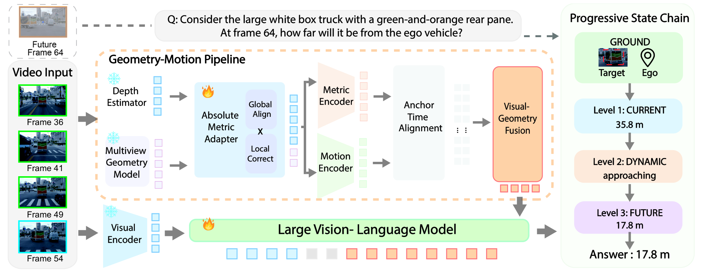
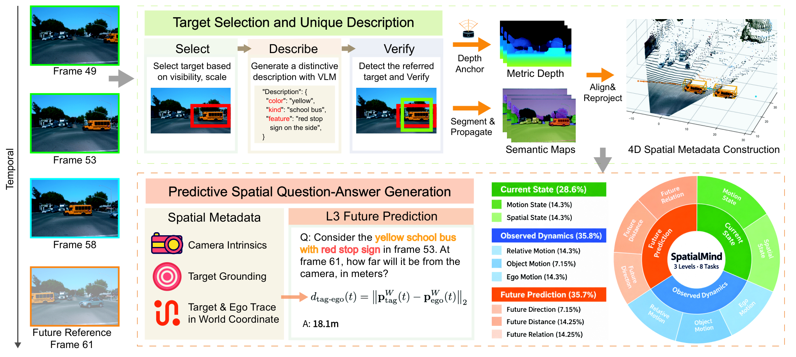

Task Definition
01 · Problem Setup and Temporal Boundaries
这篇工作的对象是视频空间问答。输入包含一段已经观察到的 RGB 视频，以及指向某个实体、参考系和时间范围的自然语言问题。模型需要回答当前距离、已观察区间的运动，或未观察时间点的距离与关系。输出不是完整的未来视频，也不是持续写入的三维地图。
论文把问题分为三个层次。Level 1 描述当前空间与运动状态；Level 2 描述观察区间内的运动距离和相对运动；Level 3 才要求超出观测末端进行预测。沿这条顺序阅读，有助于区分“看懂已经发生的变化”和“预测尚未看到的变化”。
对于 Level 3，设观测末端为 tₒ，查询时间为 t𝒻，必须满足 t𝒻 > tₒ。数据构建程序可以读取未来标注来计算答案，但模型输入不能包含未来图像或未来状态文本。这里的时间边界比“是否用了视频”更能定义预测任务。
该设定允许在给定视频前缀后作答，但论文没有据此建立一个恒定内存、逐帧低延迟的流式系统。把它与 LingBot-Map 联系时，应先区分问答模型的观测窗口和重建模型的持久状态。
Architecture
02 · Figure 3: Geometry Enters the Visual Representation

Feiran Wang et al. · 2026 · CC BY 4.0 · Unmodified original figure · Paper & Caption ↗
原图左侧是已观察帧。上方虚线框里的 Future Frame 64 表示待预测目标时刻，不是视觉编码器的输入。下方视觉编码器产生 RGB token；上方几何路径同时得到初始度量深度与多视图几何信息。
Absolute Metric Adapter 利用多帧特征校正初始深度：Global Align 处理整帧尺度偏差，Local Correct 处理空间上不均匀的误差。随后 Metric Encoder 编码深度、射线、反投影坐标和有效性信息；Motion Encoder 编码相对相机变化。几何与运动的作用不同，因此不是把它们简单视为同一种“空间特征”。
Anchor Time Alignment 将几何锚点与视频帧放在同一时间坐标上。视觉 token 作为查询读取几何信息，再通过残差形式融入 VLM 的视觉表示。图中右侧的状态链是模型生成的结构化文本，不是地图缓存里的对象槽位。
相机运动特征中的平移按累计相机路径长度归一化；度量表面信息仍以米为尺度。阅读时不能把归一化后的运动特征直接解释为未经变换的米制速度。
Formulation
03 · Metric Depth Adaptation
设 D₀ 为预训练深度估计器输出，δg 为每帧全局校正，Δl 为低分辨率局部校正，U 表示上采样。式（4）在对数深度空间求修正，再乘回 D₀。γg 和 γl 限制两类修正的幅度，tanh 则使预测值有界。
乘法形式保留深度为正的性质。全局项对一帧所有位置采用相同的比例修正；局部项允许不同区域发生不同的变化。它是受限的深度细化，不是无条件恢复真实物理尺度的保证：若初始估计偏差过大，有界校正本身也会限制可恢复的范围。
一个仅用于理解的算例：若某像素 D₀=10 米，总对数修正恰为 ln(1.1)，则输出为 11 米。这说明相同的对数修正对应相同比例，而不是所有像素都增加同一米数。论文实际精度仍应由深度监督与下游评测判断。
附录进一步给出 Dm/D₀ 的上下界。该界描述的是输出偏离初值的范围，不是相对于真值的误差上界。
Dm = D₀ ⊙ exp[γg tanh(δg) + U(γl tanh(Δl))] exp[−(γg+γl)] ≤ Dm / D₀ ≤ exp[γg+γl]
Data Construction
04 · Figure 2: Building Geometrically Grounded Supervision

Feiran Wang et al. · 2026 · CC BY 4.0 · Unmodified original figure · Paper & Caption ↗
原图的数据流程先选目标，再描述目标，最后反向核验描述是否唯一。视频实例分割提供跨帧区域；目标较清晰的裁剪用于生成外观描述；再让 VLM 在未标记图像中根据描述定位，检查框重叠与指代歧义。描述准确与几何准确是两个分别需要控制的问题。
数据来源包括 Waymo 的驾驶片段和 Ego-Exo4D 的第一视角片段。构建阶段用稀疏源测量对预测稠密深度做尺度与偏移校准，再结合内参、相机位姿和目标区域得到随时间变化的空间量。这里使用源测量是为了构造监督，不意味着推理接口要求输入激光雷达。
问题对应的几何量必须定义清楚。路径长度是逐段位移模长的累加，通常不等于起点到终点的直线距离；深度沿相机光轴，而实体到观察者的欧氏距离包含三维方向。附录中的实例还区分可见表面距离统计和目标中心距离，二者不能互换。
训练集包含 30,677 个 QA 对，评测集包含 2,000 个问题。八种任务并非在两个来源域中都有数据：例如目标运动距离和观察者未来方向的评测只出现在驾驶域。因此，总分不能单独证明每种能力都已在室内外同时验证。
d(t) = ‖p_target(t) − p_ego(t)‖₂ s(tₛ,tₒ) = Σₜ ‖p(t+1) − p(t)‖₂
Training
05 · State Supervision and Training Stages
训练首先细化度量深度适配器，两个预训练几何模型在这一阶段保持冻结；进入 VLM 训练时，再冻结该适配器。VLM 使用 LoRA 微调，同时利用结构化状态链样本和直接答案样本。不能把这个流程描述成所有模块从头联合优化。
GROUND 指明目标与空间参考，CURRENT 给出当前状态，DYNAMICS 描述已观察变化，FUTURE 描述未来预测。不同问题使用不同长度的链：当前状态题不需要生成未来段。每个段的监督由空间元数据导出，而不是只让模型自由生成一段解释。
损失中 L_D 是不带状态链的直接答案目标；L_S 对状态段的 token 交叉熵作分段平均；L_A 是在状态链条件下的答案损失。ρ 调整直接答案与状态链样本的权重，λ 调整链内状态与最终答案的权重。分段平均避免较长的状态文本仅因 token 数多就自然占据更大的权重。
推理时只提供观测前缀与问题，模型依任务层级生成状态段和答案。可读状态段便于核查单位、实体与时间范围，但它本身不证明生成文本忠实反映了模型内部的因果计算。
L = ρ L_D + (1−ρ)[(1−λ)L_A + λ L_S]
Experiments
06 · Controlled Comparisons and Ablations
主表中最有解释力的参照是同一训练数据上的 Qwen3-VL-8B + SFT。其 Overall 为 45.70，完整方法为 52.65，相差 6.95 个百分点。这一差值涉及模型增强与监督设计的整体差别，不能全归因于单个几何适配器。
几何消融固定 progressive state chain：RGB only 为 50.42，完整方法为 52.65，差 2.23 个百分点。状态链消融固定度量适配器：Direct answer 为 49.95，Full state chain 为 52.65，差 2.70 个百分点。两组控制条件不同，差值也不能简单相加解释总收益。
Free-form CoT 在状态链消融中为 34.15。更合适的结论是，该设置下有几何依据的结构化状态监督优于自由文本解释；它不是对所有任务或所有训练方式的 CoT 作普遍否定。
五种数值任务使用 MRA，在多个误差容忍度下判断数值是否接近参考答案，再取平均；三种选择题使用准确率。Overall 混合了这两类任务，因此不宜口头简化为“所有预测完全正确的比例”。外部 VSI-Bench 上本文平均 46.4，表中 Spatial-MLLM 为 48.4，也说明外部泛化并非所有指标领先。
| Comparison | Baseline | Full Model | Difference (pp) |
|---|---|---|---|
| Same-data SFT · Table 1 | 45.70 | 52.65 | +6.95 |
| RGB only with state chain · Table 3 | 50.42 | 52.65 | +2.23 |
| Direct answer with metric adapter · Table 4 | 49.95 | 52.65 | +2.70 |
Interpretation
07 · Prediction Difficulty and Remaining Uncertainty
附录分析了“把当前状态保持到未来”这一数据诊断。在第一视角未来距离题中，直接使用标注的当前距离，有 117/143 题满足单一主容忍度，即 81.8%；驾驶域为 49/142，即 34.5%。这表明不同来源域的未来变化幅度和问题难度并不相同。
该诊断直接使用当前状态标注，不是一个只看 RGB 的模型；其单容忍度统计也不同于主表 MRA。不能把 81.8% 与模型总分 52.65 直接相减。它更适合提醒自己：未来问答需要同时检查当前估计误差和真实状态变化，避免把状态持续性当成预测能力。
对记忆研究的启发是把历史状态组织成可检验的中间量，例如实体指代、尺度、时间范围和运动证据。不过，这篇论文并未检验以这些状态控制重建 memory 读写是否有效。若做迁移，仍需增加受控的容量、历史长度和误差传播实验。
截至本次核查，项目页标注代码与数据待发布。本文笔记基于 v1 原文与项目页，不包含复现结果。端到端延迟、长时间预测和几何噪声敏感性在原文限制部分仍属于待进一步量化的问题。
Discussion
Reading Questions
Is the future segment part of the model input?
不是。未来段用于生成目标和评测参考；视觉输入截止在观测末端。图里展示未来帧是为了说明任务，不代表模型读取该帧。
Is the progressive state chain a persistent map?
不是。它是按问题生成并接受监督的文本状态序列。将其转为跨窗口持久 memory 是另外一个需要验证的设计。
Which comparison isolates the role of geometry?
固定状态链的几何消融更接近这个问题；同数据 SFT 与完整模型的差值包含多项设计变化。
References
Figures reproduced from the linked paper under CC BY 4.0. Explanations and analysis are reading notes, not author statements.
Verified on October 12, 2026. Paper claims refer to the linked versions; code references reflect the official repositories on this date.